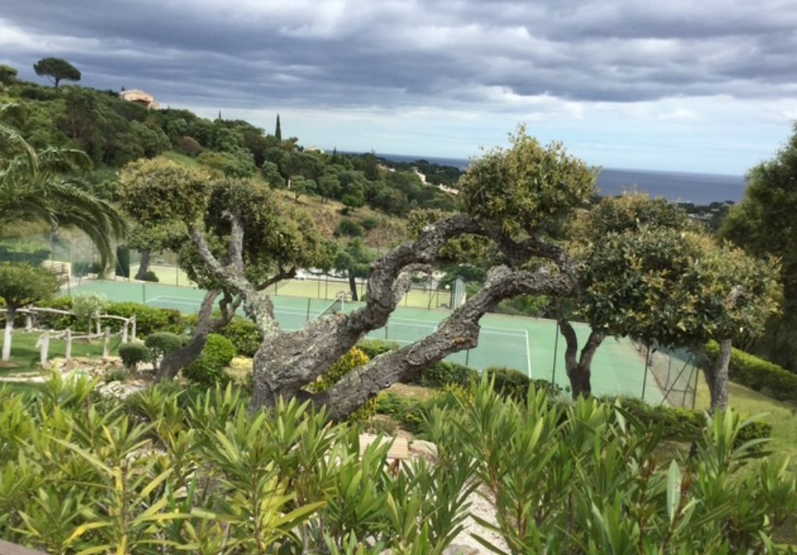

The Area

Nearby
Guerrevieille beach and its restaurant are just a few minutes away by car or e-bike, and access to the estate’s private beach is available as a paid option. Beauvallon golf course is right next door. The centre of Sainte-Maxime, with its markets and harbour, where boat shuttles leave for Saint-Tropez, is also close by.